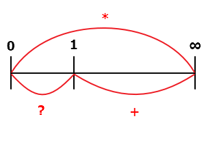
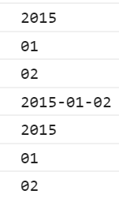
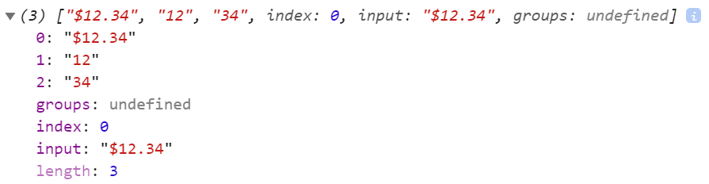

JavaScript Regular Expression - quantifiers、anchors (assertions)、groups
一、Quantifiers

1、「n?」：n 為任意字元或字串，意指該字元或字串連續出現次數可以是 0 ~ 1 次。
var str = "a-a12-a1212"; console.log(str.replace(/a(12)?/g, "***"));
其結果為 "***-***-***12"
2、「n+」：n 為任意字元或字串，意指該字元或字串連續出現次數可以是 1 ~ ∞ 次。
var str = "he\nhi\nam\nhim"; console.log(str.match(/h.+/gm));
其結果為 ["he", "hi", "him"]
3、「n*」：n 為任意字元或字串，意指該字元或字串連續出現次數可以是 0 ~ ∞ 次。
var str = "a123b123123c"; console.log(str.replace(/(123)*/g, ""));
其結果為 "abc"
4、「n{X}」：n 為任意字元或字串，意指該字元或字串連續出現次數固定為 X 次。
var str = "1-123-123123-123123123"; console.log(str.replace(/(123){2}/g, "*"));
其結果為 "1-123-*-*123"
5、「n{X,}」：n 為任意字元或字串，意指該字元或字串連續出現次數固定為 X ~ ∞ 次。
var str = "1-123-123123-123123123"; console.log(str.replace(/(123){2,}/g, "*"));
其結果為 "1-123-*-*"
5、「n{,Y}」：n 為任意字元或字串，意指該字元或字串連續出現次數固定為 0 ~ Y 次。
沒有這種東西。
6、「n{X,Y}」：n 為任意字元或字串，意指該字元或字串連續出現次數可以是 X ~ Y 次。
var str = "a-a12-a1212"; console.log(str.replace(/a(12){1,2}/g, "***"));
其結果為 "a-***-***"
二、anchors (assertions)
1、「\bn」：n 為任意字元或字串，其位置位於由「邊」區分出文字的開頭或結尾。
var str = "a 1a2 12a a12"; console.log(str.replace(/\ba/g, "*"));
其結果為 "* 1a2 12a *12"
說明：
只要非英文或數字都可視為合法的「邊」。
例如：空白、逗號、句號、中文字、其他特殊符號都可視為「邊」。
var str = "a 1a2 12a a12"; console.log(str.replace(/a\b/g, "*"));
其結果為 "* 1a2 12* a12"
2、「\Bn」：表示一個 n 字元或字串，其位置不在於由「邊」區分出文字的開頭或結尾。
var str = "a 1a2 12a a12"; console.log(str.replace(/\Ba/g, "*"));
其結果為 "a 1*2 12* a12"
var str = "a 1a2 12a a12"; console.log(str.replace(/a\B/g, "*"));
其結果為 "a 1*2 12a *12"
3、「^n」：n 為任意字元或字串，其位置位於每行字串的開頭。
var str = "he\nah\nam\nhim"; console.log(str.match(/^h.+/gm));
其結果為 ["he", "him"]
4、「n$」：n 為任意字元或字串，其位置位於每行字串的結尾。
var str = "he\nah\nam\nhim"; console.log(str.match(/.+h$/gm));
其結果為 ["ah"]
5、「n(?=z)」：Zero-Width Positive Lookahead Assertions
n 為任意字元或字串，z 為任意字元或字串，
其位置位於比對樣本的前面，並且該比對樣本的內容要等於 z。
var str = "this is cat bearcat bigbearcat"; console.log(str.replace(/bear(?=cat)/g, "*"));
其結果為 "this is cat *cat big*cat"
6、「n(?!z)」：Zero-Width Negative Lookahead Assertions
n 為任意字元或字串，z 為任意字元或字串，
其位置位於比對樣本的前面，並且該比對樣本的內容不等於 z。
var str = "this is bear bearcat bigbearcat"; console.log(str.replace(/bear(?!cat)/g, "*"));
其結果為 "this is * bearcat bigbearcat"
7、「(?<=z)n」：Zero-Width Positive Lookbehind Assertions
n 為任意字元或字串，z 為任意字元或字串，
其位置位於比對樣本的後面，並且該比對樣本的內容要等於 z。
var str = "this is cat bearcat bigbearcat"; console.log(str.replace(/(?<=bear)cat/g, "*"));
其結果為 "this is cat bear* bigbear*"
8、「(?<!z)n」：Zero-Width Negative Lookbehind Assertions
n 為任意字元或字串，z 為任意字元或字串，
其位置位於比對樣本的後面，並且該比對樣本的內容不等於 z。
var str = "this is cat bearcat bigbearcat"; console.log(str.replace(/(?<!bear)cat/g, "*"));
其結果為 "this is * bearcat bigbearcat"
三、groups
1、「(a|b)」：a、b 為任意字元或字串，只要等於比對樣本裡的內容皆符合條件。
var str = "this is bear bearcat bigbearcat"; console.log(str.replace(/(this)/g, "*"));
其結果為 "* is bear bearcat bigbearcat"
var str = "this is bear bearcat bigbearcat"; console.log(str.replace(/(cat|this)/g, "*"));
其結果為 "* is bear bear* bigbear*"
var str = "this is bear bearcat bigbearcat"; console.log(str.replace(/(this|is|cat)/g, "*"));
其結果為 "* * bear bear* bigbear*"
2、「(?<Name>x)」：Named capturing group
let re = /(?<year>\d{4})-(?<month>\d{2})-(?<day>\d{2})/; let result = re.exec('2015-01-02'); console.log(result.groups.year); console.log(result.groups.month); console.log(result.groups.day); console.log(result[0]); console.log(result[1]); console.log(result[2]); console.log(result[3]);
其結果為

3、「(?:x)」：Non-capturing group，表示僅需要用作 group 的用途，但不需要擷取群組。
var str = "$12.34"; var pattern = /(?:\$)(\d{2})\.(\d{2})/; var match = pattern.exec(str); console.log(match);
其結果為

參考資料：